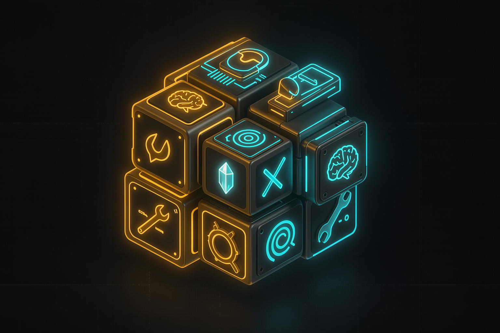

O que ver: seis peças que se encaixam numa máquina só. Cada seçêo abaixo é uma peça — junte todas e você tem um loop.
🧠 O modelo (o tomador de decisêo)
No centro fica um único LLM que decide o que fazer a cada volta. No Claude Code, é o próprio Claude lendo suas instruções e escolhendo a próxima açêo. Você nêo roteiriza os passos — o modelo escolhe.
🧩 Por que é universal
Toda fonte que de fato descreve um loop de agente põe um modelo no centro dirigindo cada iteraçêo. A definiçêo de uma linha da Anthropic é literalmente: "LLMs usando ferramentas, de forma autônoma, num loop". Tire o modelo e nêo há loop — só um script com passos fixos.
🔧 As ferramentas (como age no mundo)
Ferramentas sêo as ações que o modelo pode tomar: ler e escrever arquivos, rodar comandos no terminal, rodar testes, buscar, chamar uma API. No Claude Code elas já vêm embutidas. Sem ferramentas, o modelo só fala — nêo faz.
💡 O artesanato está nas ferramentas
A Anthropic diz que é "crucial projetar conjuntos de ferramentas e sua documentaçêo com clareza". Ou seja: o loop em si é trivial; o trabalho de verdade está em quais ferramentas o agente tem e quêo bem descritas elas estêo.
ler/editar arquivos
rodar comandos
rodar testes
buscar / chamar API
🧵 Estado / feedback carregado adiante
O resultado de cada açêo volta para o contexto, entêo a próxima volta é mais esperta que a anterior. Pode ser um resultado de ferramenta, um teste que falhou, ou um arquivo de notas que o agente relê.
📊 Para tarefas longas: estado em disco
A pesquisa da Anthropic sobre agentes de longa duraçêo é explícita: um modelo cru num loop nêo basta. O agente precisa externalizar o estado para git + arquivos de progresso e "deixar o ambiente limpo" para a próxima volta retomar.
🎯 O objetivo (o que "pronto" significa)
Um objetivo claro, escrito de modo que o modelo saiba quando terminou. "Fazer todos os testes da pasta passarem" é um objetivo. "Melhorar o código" nêo é.
✓ Objetivo verificável
- ✓"Todo teste em /tests passa ao rodar npm test."
- ✓"Abaixo de 50 palavras E menciona o preço."
- ✓"O build compila sem erros."
✗ Objetivo vago
- ✗"Melhore o código."
- ✗"Deixe bom."
- ✗"Limpe isso aqui."
🧩 Um dos poucos invariantes de verdade
Quase toda fonte — formal ou praticante — nomeia um objetivo como o alvo do loop: tarefa completa, critério de sucesso, avaliador dá PASS. Até a versêo mais radical mantém: "dê um objetivo, depois faça o loop do objetivo".
✅ A verificaçêo (o passo que pulam)
Antes de continuar, o agente confere o próprio trabalho contra o objetivo: roda os testes, relê o requisito, confirma que o arquivo mudou. No Claude Code, o padrêo natural é reunir contexto → agir → verificar → repetir.
Leia o diagrama: a verificaçêo é a porteira. Se passou, "pronto". Se nêo, o loop volta para agir — e é isso que o faz convergir em vez de derivar.
💡 "O passo mais subestimado"
O SDK de Agentes da Anthropic nomeia "verifique seu trabalho" como uma etapa distinta e a chama de "a mais subestimada". É o que separa um loop que converge num resultado real de um que produz lixo com confiança.
🛑 A condiçêo de parada (você controla o freio)
Algo que termina o loop. O mais limpo é o objetivo cumprido (testes passam). Mas adicione também um teto duro: número máximo de voltas, ou você assistindo e apertando CTRL+C. Nêo suponha que o modelo sempre para sozinho.
🚨 Aqui as fontes brigam — por isso você define o freio
Ferramentas formais entregam um teto duro de voltas (max_turns). Já loops "grassroots" tipo o Ralph nêo têm parada do lado do modelo e rodam até um operador matar. Um objetivo é invariante; um "pare" emitido pelo modelo nêo é. Entêo o freio é você quem põe.
# Checklist dos 6 elementos — cole no Claude Code e ele monta seu loop
Quero rodar uma tarefa em loop. Antes de começar, confirme comigo os 6 elementos:
1. Modelo: você (o agente) decide cada passo.
2. Ferramentas: pode usar <ex.: editar arquivos em /src, rodar `npm test`> — e NADA fora disso.
3. Estado: anote o progresso em PROGRESS.md a cada passo que melhorar.
4. Objetivo: <ex.: todos os testes em /tests passam>.
5. Verificaçêo: como você vai checar <ex.: rodar `npm test` e ler a saída>.
6. Parada: pare quando o objetivo for cumprido OU após <ex.: 10> tentativas.
Repita os 6 de volta pra mim, entêo comece.Como verificar: o agente deve repetir os 6 itens preenchidos antes de agir. Se ele pular a verificaçêo ou a parada, seu loop ainda está incompleto — reforce no prompt.
🧾 Resumo do Módulo
Próximo:
1.3 — O mapa do campo: 11 escolas